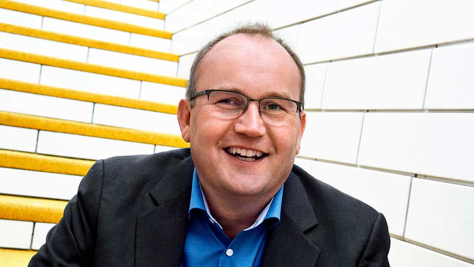

LEGO Group is a Danish private company engaged in the production of the same name series of educational toys, which are sets of parts for assembling and modeling a variety of objects - building blocks. The second largest (after Hasbro) toy manufacturer in the world.
The history of the LEGO Group began in the workshop of Ole Kirk Christiansen (Danish: Ole Kirk Christiansen[5]) (born April 7, 1891), a carpenter from Billund, Denmark, who began making wooden toys in 1932[5]. In 1934 his company acquired the name LEGO, from the Danish phrase "leg godt," which means "play well." In 1947 it expanded production to plastic toys[5]. In 1949, among other new products, LEGO began producing an early version of the now popular constructor called "Automatically Connecting Bricks." These parts partially took as their basis Kiddicraft's self-locking bricks, which had been patented in Britain in 1939 and released in 1947. After studying a sample provided by a British supplier of a molding machine the company bought, LEGO modified the Kiddicraft brick design. The bricks were originally made of acetyl cellulose and were improved traditional wooden composite blocks that were joined together with a few round ledges on top and a hollow rectangular bottom. The bricks snapped together tightly, but at the same time, you didn't have to exert excessive force to pull them apart.
The motto of the LEGO Group is "Det bedste er ikke for godt.", which translates to "The best isn't good enough yet." This motto was created by Ole Kirk to inspire his employees to never skimp on quality, of which he was convinced. This motto is used by the company to this day. By 1951 plastic toys accounted for half of LEGO's production, though the Danish trade magazine Legetøjs-Tidende ("Toy Times"), which visited the LEGO factory in Billund in the early 1950s, believed that plastic toys could never replace traditional wooden ones. Despite popular opinion, Lego toys became a significant exception to the dislike of children's plastic toys, in part because of the high standards set by Ole Kirk.
By 1954, Christiansen's son Godtfred became the junior managing director of Lego. It was his negotiations with overseas buyers that led to the ideas for the toy device. Godtfred saw in Lego bricks great potential to become a device for creative play, but they still had flaws from a technical point of view: the docking ability was limited and they themselves were not versatile. In 1958, a modern brick design was developed, and it took 5 years to find the right material - ABS plastic (acrylonitrile butadiene styrene). The modern Lego brick was patented on January 28, 1958.
The LEGO Duplo product line, introduced in 1969, is a range of simple blocks that are twice as wide, longer and taller than standard Lego blocks, and designed for small children.
In 1978, LEGO produced the first minifigures, which have since become a staple in most sets. New elements are often released along with new sets. There are also LEGO sets designed for little girls, such as the Bilville, Clikits (older sets), Disney Princess and Friends lines, which consist of small interlocking pieces designed to inspire creativity and arts and crafts in the same way as regular Lego bricks. The Bilville, Clikit, Disney Princess and Friends pieces can connect to regular Lego bricks as decorative pieces.
The LEGO Fabuland series was produced from 1979 to 1989. The more advanced LEGO Technic sets began to be produced in 1977. LEGO Primo is a line of LEGO blocks for young children that was produced between 2004 and 2006. In 1995, the LEGO Baby series was launched for toddlers.
In May 2011, the space shuttle Endeavour took 13 LEGO sets to the International Space Station during the STS-134 mission, where astronauts built models and observed their interaction in microgravity as part of the LEGO Briks space program. The results of the study were distributed to schools as part of an educational project.
In May 2013, New York City unveiled the largest model ever assembled with LEGO, a 1:1 scale X-Wing fighter built from more than 5 million parts. There are other records: a tower 112 feet high (34.14 meters) and a railroad 4 km long.
The number of employees at the end of 2020 was 20,468 compared with 18,800 at the end of 2019. Below you can find a list of Board of Directors and Management:
Chief Executive Officer
Chief Digital & Technology Officer
Chief Operations Officer
Chief Product & Marketing Officer
1949 - the appearance of plastic snap dice. Their sizes are aligned so that the cubes can be securely connected not only at the top, but also at the sides.
1954 - the LEGO brand is officially registered in Denmark.
1961 - for the first time cars were also assembled from bricks; before that time ordinary scale models were attached to the sets and only buildings could be built from bricks.
1961 - in North America Samsonite (now a famous manufacturer of luggage bags and suitcases) produces and sells LEGO sets under license. The cooperation lasts until 1988.
1962 - Cubes of minimum height appear, equal to 1/3 of the base height.
1963 - for the first time kits come with assembly instructions.
1968 - The first amusement park, Legoland, opens in Billund on July 7.
1970 - The company's headcount reaches 1,000 employees.
1973 - The company logo changes to a modern logo with white lettering in a red square.
1978 - The classic LEGO figurines of men with faces (lego-man) and movable heads, arms and legs appear.
1996 - The lego.com web site is launched.
2000 - The British Toy Dealers Association named the LEGO brick the most significant toy of the 20th century.
2011 - LEGO ranked fifth in a survey of 48,000 people in 15 of the world's most important regions in terms of trust in the company.
Beginning in 1991, with the beginning of the era of computer video games, LEGO suffered 11 years of losses, correcting this situation only with the release of new robotic sets.
One of the new popular hobbies is creating cartoons or recreating excerpts from existing movies, using LEGO bricks for the setting and LEGO figures as characters (LEGO animation). Usually such films use the stop-motion animation method. Since 2000, this hobby has spread around the world, particularly in Germany.
All LEGO building blocks are made to a certain standard with a high degree of precision (cubes created in 2015 can be docked with cubes produced in 1958), which allows them to be connected without much effort. In addition, once joined, the parts must be securely fastened to each other. To ensure these conditions, the molds for stamping the elements of the constructor are made with an accuracy of 2 microns[7]. 6 2x4 bricks can be connected in 915,103,765 ways.
Basic concept selection and design and research takes place at Lego's headquarters in Billund, where the company employs about 120 designers. The company also has small design offices in the United Kingdom, Spain, Germany and Japan, which are tasked with developing products specifically for these markets. The average development period of a new product lasts 12 months and consists of three stages. The first stage identifies market trends and developments, including contacting designers directly with stores; some are placed in toy stores shortly before the vacations, while others conduct surveys among children. The second phase is product design and development based on the results of the first phase. Since September 2008, design teams have been using 3D modeling software to create CAD drawings from initial design sketches. Then, using in-house stereolithographic machines, prototypes of the designed models are created. These prototypes are provided to the project team for comment and are tested by parents and children during the review process. The designs can be modified according to the results of the focus group research. Virtual models of finished Lego products are built at the same time as the instruction manual is written. Ready-made CAD models are also used more widely, for example, for marketing and packaging.
The LEGO Digital Designer computer program is available to consumers to create their own digital design, and a similar tool is available for the Google Chrome browser. The service to create physical models from the LDD program for consumers was closed in 2012.